Aloitin harjoituksen käynnistämällä Ryu-verkonohjaimen komennolla ryu-manager ryu.app.simple_switch_13. Tämän jälkeen käynnistin Mininet-verkon kolmella koneella seuraavalla komennolla:
sudo mn --topo single,3 --mac --switch ovsk --controller remote
Tarkistin verkon toiminnan komennolla pingall. Kaikki kolme konetta (h1, h2 ja h3) saivat yhteyden toisiinsa, eikä pakettihävikkiä esiintynyt (0 % dropped).
Avasin koneiden terminaalit ja tarkistin h1-koneen ARP-taulun komennolla arp -n. ARP-taulussa näkyivät verkon koneiden IP- ja MAC-osoitteet. Esimerkiksi h2:n IP-osoite 10.0.0.2 oli yhdistetty MAC-osoitteeseen 00:00:00:00:00:02.
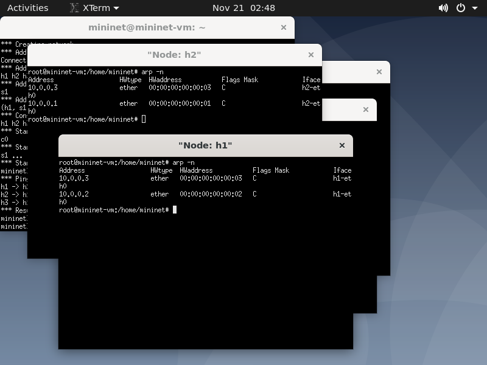
Seuraavaksi siirryin h3-koneelle ja otin IP-pakettien välityksen käyttöön komennolla:
sysctl -w net.ipv4.ip_forward=1
Tämän jälkeen lisäsin opettajan ohjeen mukaisen iptables-säännön, joka ohjaa SSH-liikenteen porttiin 22:
iptables -t nat -A PREROUTING -p tcp --dport 22 -j REDIRECT --to-port 22
Käynnistin liikenteen tallennuksen tcpdump-ohjelmalla:
tcpdump -i h3-eth0 -w arp-p.pcap &
Tämän jälkeen käynnistin Wiresharkin ja valitsin tarkasteltavaksi h1-eth0-verkkoliikenteen opettajan ohjeen mukaisesti.
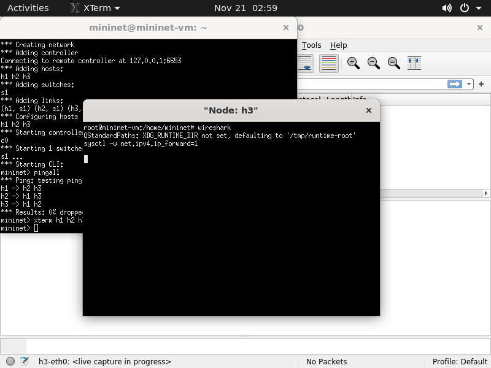
Seuraavaksi käynnistin h3-koneella SSHesame-palvelun komennolla:
sshesame -port 22 -listen_address 0.0.0.0
Käynnistin myös h2-koneen SSH-palvelimen. Tämän jälkeen suoritin h3-koneella ARP Poisoning -ohjelman:
python3 ./arp_poison.py
Ohjelman tarkoituksena oli toteuttaa ARP-myrkytys, jossa verkon koneille lähetetään väärennettyjä ARP-vastauksia.
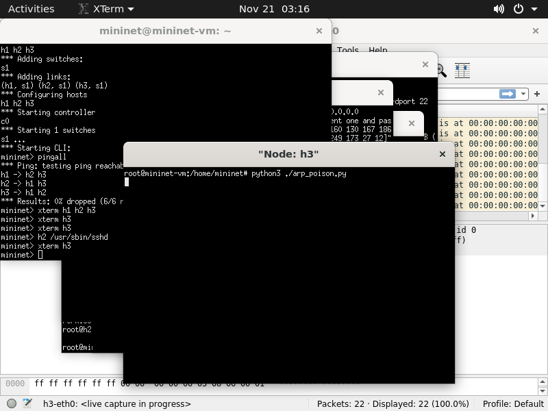
Tämän jälkeen siirryin h1-koneelle ja yritin muodostaa SSH-yhteyden h2-koneeseen komennolla:
ssh h2
Yhteyden muodostamisen yhteydessä sain varoituksen POSSIBLE DNS SPOOFING DETECTED sekä ilmoituksen REMOTE HOST IDENTIFICATION HAS CHANGED. SSH ilmoitti, että h2-koneen isäntäavain oli muuttunut. Tämä oli merkki siitä, että yhteys saattoi ohjautua hyökkääjän koneen kautta.
Poistin vanhan SSH-isäntäavaimen komennolla:
ssh-keygen -R h2
Tämän jälkeen yritin muodostaa yhteyden uudelleen komennolla ssh h2 ja hyväksyin uuden isäntäavaimen.
H3-koneen SSHesame-lokissa näkyi ilmoitus Password authentication accepted sekä SSH connection established. Tämä osoitti, että h1-koneen SSH-yhteys oli päätynyt h3-koneella toimivaan SSHesame-palveluun.
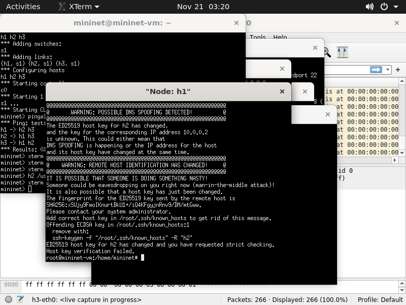
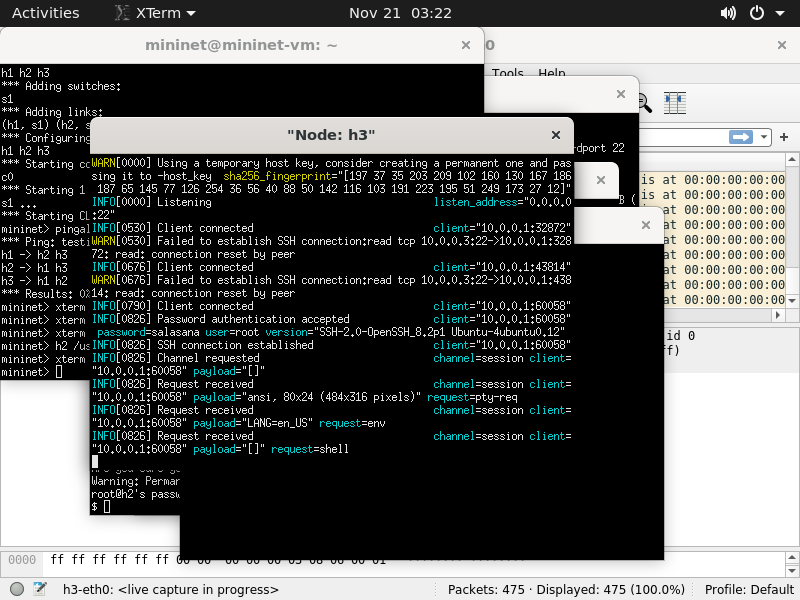
Lopuksi tarkastelin Wiresharkilla kaapattua ARP-liikennettä. Wiresharkissa näkyi ARP-vastauksia, joissa IP-osoitteeseen 10.0.0.1 liittyi MAC-osoite 00:00:00:00:00:03. Wireshark ilmoitti myös havainnosta Duplicate IP address detected for 10.0.0.1. Tämä osoitti, että samaa IP-osoitetta käytettiin kahdella eri MAC-osoitteella.
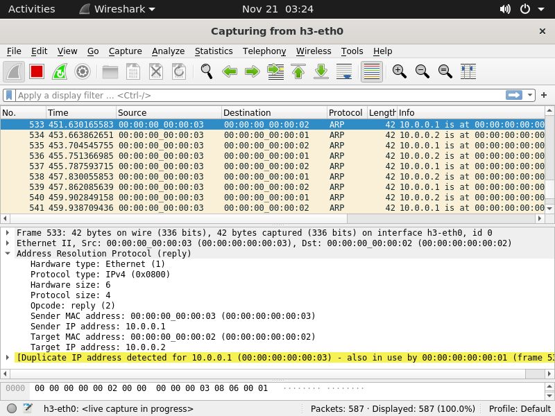
Tarkistin lopuksi h1-koneen ARP-taulun uudelleen komennolla arp -n. Nyt h2-koneen IP-osoite 10.0.0.2 oli yhdistetty MAC-osoitteeseen 00:00:00:00:00:03, joka kuuluu h3-koneelle. Ennen hyökkäystä sama IP-osoite oli yhdistetty h2:n omaan MAC-osoitteeseen 00:00:00:00:00:02.
Tämä vahvisti, että ARP-taulun tietoja oli muutettu hyökkäyksen seurauksena.
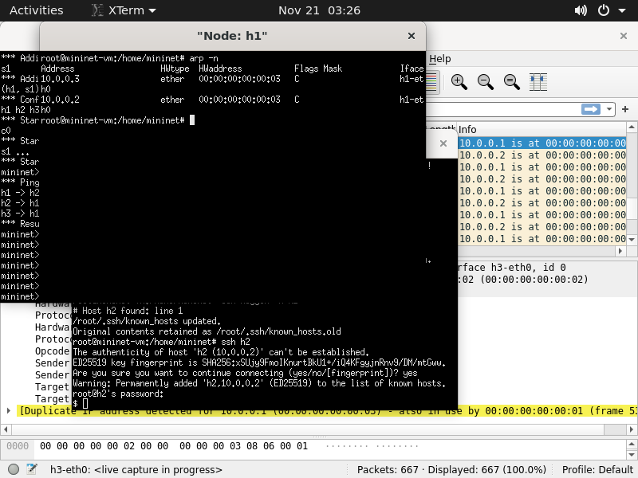
Käynnistin Mininet-verkon komennolla: sudo python3 hub_topo.py. Verkkoon muodostui neljä tietokonetta (h1, h2, h3 ja h4) sekä kytkin. Tarkistin verkon toiminnan komennolla pingall, ja kaikki koneet saivat yhteyden toisiinsa.
Avasin tarvittavat terminaalit komennolla: xterm h1 h2 h3.
Tämän jälkeen tutkin ICMP-liikennettä h1-koneella käynnistämällä tarkkailuohjelman komennolla: python3 sniff_icmp.py. Lähetin h2-koneelta kolme ping-pyyntöä h1-koneelle komennolla: ping -c 3 10.0.0.1.
Seuraavaksi tutkin tiedostoa spoof_icmp.py, joka käyttää Scapy-kirjastoa ICMP-pakettien käsittelyyn. Skripti tunnistaa ICMP Echo Request -paketit ja muodostaa niiden perusteella väärennetyn Echo Reply -vastauksen.
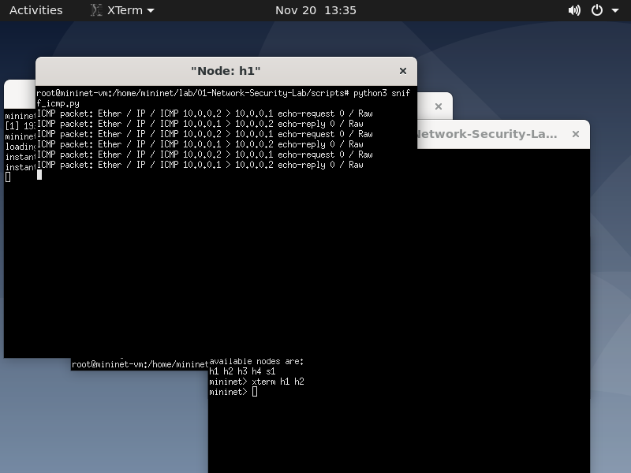
Käynnistin ICMP-huijausskriptin h2-koneella komennolla: python3 spoof_icmp.py. Tämän jälkeen lähetin h3-koneelta kolme ping-pyyntöä h1-koneelle. Skriptin tulosteessa näkyi kolme kertaa ilmoitus "Sent 1 packets.", mikä osoitti, että skripti lähetti väärennettyjä paketteja.

Tämän jälkeen avasin Wiresharkin h2-koneella ja valitsin tarkkailtavaksi verkkoliitännäksi h2-eth0. Rajasin ICMP Echo Reply -paketit seuraavalla näyttösuodattimella: icmp.type == 0 && eth.src == ae:09:be:40:71:53.
Wiresharkista löytyi kolme ICMP Echo Reply -pakettia. Pakettien IP-lähdeosoitteena näkyi 10.0.0.1 eli h1-koneen osoite, mutta Ethernet-kehyksen lähdeosoite oli ae:09:be:40:71:53 eli h2-koneen MAC-osoite.
Tämä osoitti, että h2 lähetti ICMP-vastauksia käyttäen h1-koneen IP-osoitetta lähdeosoitteena. Väärennetyt paketit pystyttiin tunnistamaan vertailemalla niiden IP- ja MAC-osoitteita.
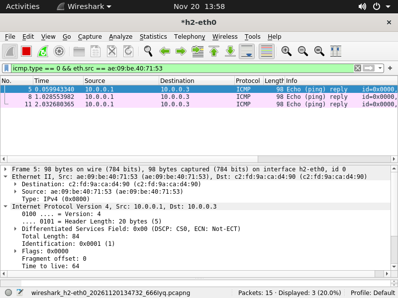
Käynnistin harjoituksen mininetissä komennolla: sudo python3 hub_topo.py. Verkkoon muodostui neljä tietokonetta ja kytkin. Tarkistin verkon toiminnan komennolla: pingall ja kaikki koneet saivat yhteyden toisiinsa.
Avasin harjoituksessa tarvittavat terminaalit komennolla: xterm h1 h2 h3. Harjoituksessa h1 toimi TCP-palvelimena, h2 asiakkaana ja h3 verkkoliikenteen tarkkailijana.
Seuraavaksi käynnistin h1-koneella TCP-palvelimen komennolla: python3 tcp_server.py. Palvelin jäi odottamaan yhteyksiä porttiin 12345.
Siirryin h2-koneelle ja käynnistin TCP-asiakkaan komennolla: python3 tcp_client.py. Asiakas muodosti yhteyden h1-koneeseen, lähetti viestin "Hello from Host 2" ja vastaanotti h1:n vastauksen "Hello from Host 1". Näin varmistin, että normaali TCP-yhteys toimi.
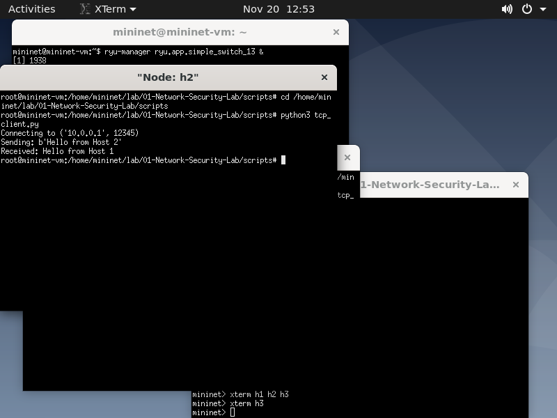
Tämän jälkeen käynnistin h3-koneella TCP-liikenteen tarkkailun komennolla: python3 sniff_tcp_session.py. Ohjelma tarkkaili verkkoliikennettä ja näytti TCP-pakettien lähde- ja kohdeosoitteet sekä SEQ- ja ACK-numerot.
Muodostin h2-koneelta uuden TCP-yhteyden h1-koneeseen. H3 havaitsi yhteyden liikenteen, minkä ansiosta pystyin tarkastelemaan TCP-istunnon tietoja.
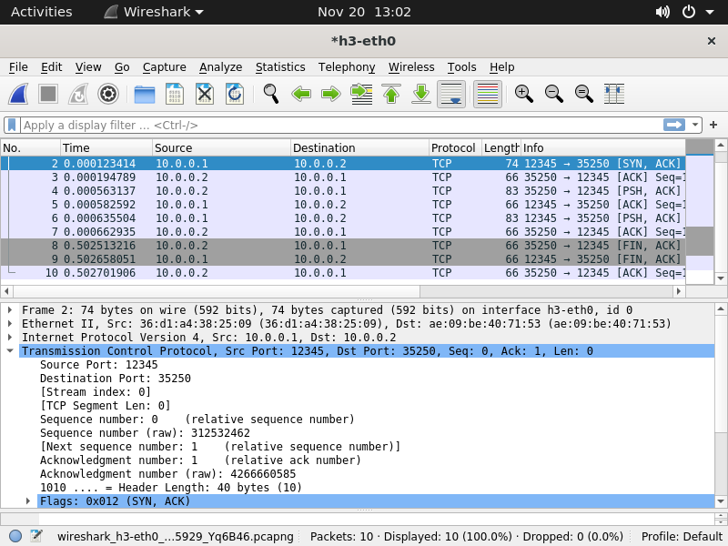
Jatkoin tutkimusta avaamalla tallennetun liikenteen Wiresharkissa. Tarkastelin TCP-paketteja ja niiden järjestys- ja kuittausnumeroita (Sequence Number ja Acknowledgment Number). Huomasin myös, että TCP-paketin sisältämän datan pituus oli 17 tavua ja sitä seurannut kuittausnumero oli 18. Tämä havainnollisti, miten TCP pitää kirjaa lähetetystä datasta ja sen vastaanottamisesta.
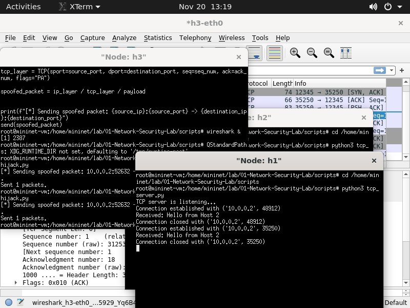
Seuraavaksi tutkin tiedostoa tcp_hijack.py, joka sisältää TCP-istunnon kaappaamiseen tarkoitetun ohjelman. Ohjelman tarkoituksena on lähettää väärennetty TCP-paketti, jossa hyökkääjä esiintyy alkuperäisen yhteyden toisena osapuolena.
Suoritin h3-koneella ohjelman komennolla: python3 tcp_hijack.py. Ohjelma ilmoitti lähettäneensä yhden väärennetyn TCP-paketin. H1-koneen palvelimessa ei kuitenkaan näkynyt väärennetyn viestin vastaanottamista.
TCP-istunnon kaappaus ei siis onnistunut tässä testissä. Yksi mahdollinen syy oli se, että aiempi TCP-yhteys oli jo sulkeutunut. Lisäksi ohjelmassa valmiiksi määritellyt portti- ja SEQ/ACK-numerot eivät välttämättä vastanneet tarkkailemaani TCP-yhteyttä.
TCP SYN-Flood on palvelunestohyökkäys (DoS), jossa kohdepalvelimelle lähetetään suuri määrä TCP-yhteyden muodostamiseen liittyviä SYN-paketteja. SYN-Flood-hyökkäyksessä hyökkääjä lähettää suuren määrän SYN-paketteja, mutta ei viimeistele yhteyden muodostamista normaalilla ACK-vastauksella. Tällöin palvelimelle voi jäädä useita keskeneräisiä yhteyspyyntöjä, jotka kuluttavat sen resursseja. Jos keskeneräisiä yhteyksiä kertyy riittävästi, palvelimen kyky käsitellä uusia yhteyspyyntöjä voi heikentyä tai palvelu voi muuttua tilapäisesti saavuttamattomaksi.
Ennen harjoituksen aloittamista vaihdoin VMware Workstationin verkkosovittimen Bridged-tilasta Host-only-tilaan, jotta harjoitusympäristö olisi eristetty fyysisestä lähiverkosta.
Tutustuin ensin tree_topology.py-tiedoston sisältöön ja muokkasin simulaation parametreja, jotta testistä saatiin lyhyempi ja hallitumpi. Tein seuraavat muutokset:
episode_count = 100 → episode_count = 1: Pienensin testikierrosten määrän sadasta yhteen, jotta simulaatio suoritettiin vain kerran.episode_length = 10 → episode_length = 2: Lyhensin yhden testikierroksen keston kymmenestä sekunnista kahteen sekuntiin.--flood → -S -c 20 -i u100000: Poistin rajattoman pakettien lähetyksen ja otin käyttöön TCP SYN -pakettien lähettämisen. Rajoitin pakettimäärän 20:een ja määritin lähetysväliksi 100 000 mikrosekuntia eli 0,1 sekuntia.Säilytin muut keskeiset asetukset ennallaan. Simulaatiossa oli kahdeksan isäntälaitetta, hyökkäyksen kohteena oli osoite 10.0.0.8 ja lähdeosoitteena käytettiin osoitetta 10.1.1.1.
Käynnistin Ryu-ohjaimen komennolla: ryu-manager ryu.app.simple_switch_13
Tämän jälkeen suoritin simulaation komennolla: sudo python3 tree_topology.py
Ohjelma käynnisti Mininet-verkon ja suoritti yhden testikierroksen. Tulosteessa näkyi, mikä kone valittiin hyökkääjäksi ja mikä kone lähetti normaalia liikennettä. Simulaation aikana hyökkääjäksi valittiin h6 ja normaalia liikennettä lähettäväksi koneeksi h0.
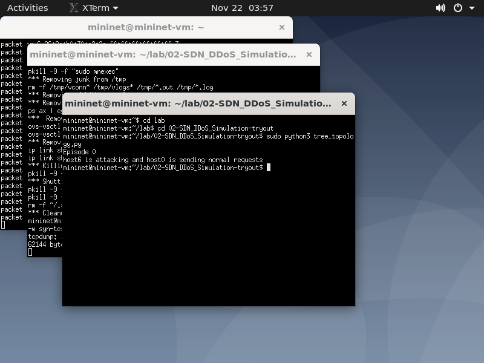
Tallensin simulaation aikana syntynyttä verkkoliikennettä ja avasin syn-test.pcap-tiedoston Wiresharkissa.
Rajasin liikenteen seuraavalla näyttösuodattimella: tcp.flags.syn == 1 && tcp.flags.ack == 0
Suodattimen avulla pystyin tarkastelemaan TCP-paketteja, joissa SYN-lippu oli asetettu mutta ACK-lippu ei ollut päällä. Wiresharkissa näkyi 36 suodattimeen sopivaa pakettia.
Pakettien tiedoista havaitsin seuraavat osoitteet:
TCP-paketin tiedoista pystyin tarkistamaan, että SYN-lippu oli asetettu (SYN: Set) ja ACK-lippu ei ollut asetettu (ACK: Not set). Tämä vastaa TCP-yhteyden muodostamisen ensimmäistä vaihetta.
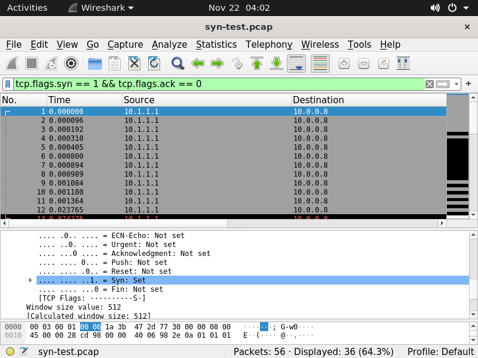